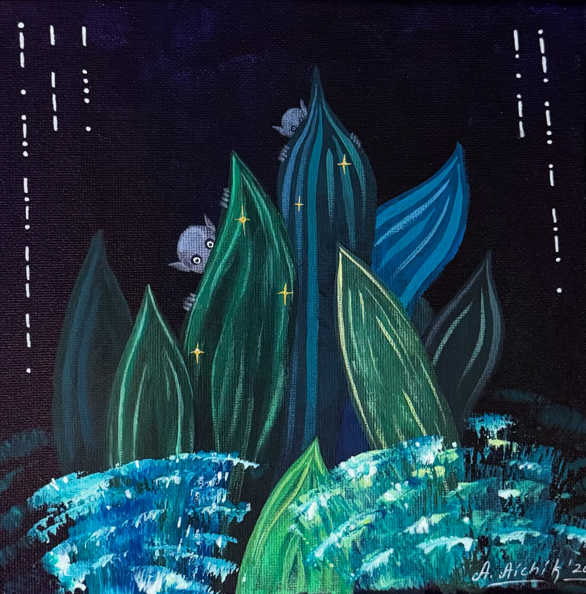
Welcome to the New Place
Acrylics on canvas · Singapore · 2026
"Welcome to the New Place" is an ode to travel and the mixed feeling of curiosity, excitement, and caution when making the first steps in a new city or country.
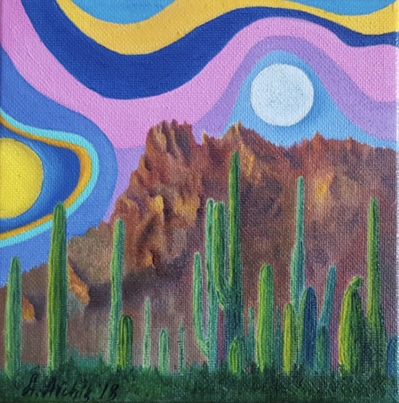
The Teachings of Don Juan (triptych) — I
Oil on canvas · Singapore · 2021
A mythic meditation on knowledge and the limitations of the human mind.
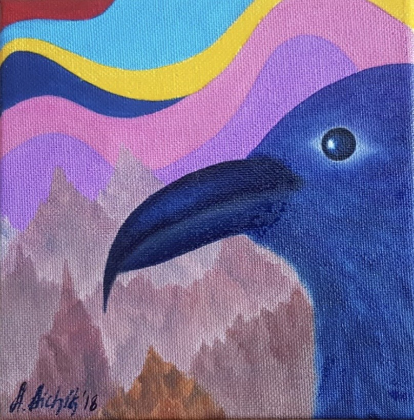
The Teachings of Don Juan (triptych) — II
Oil on canvas · Singapore · 2021
Transformation held in tension and color.
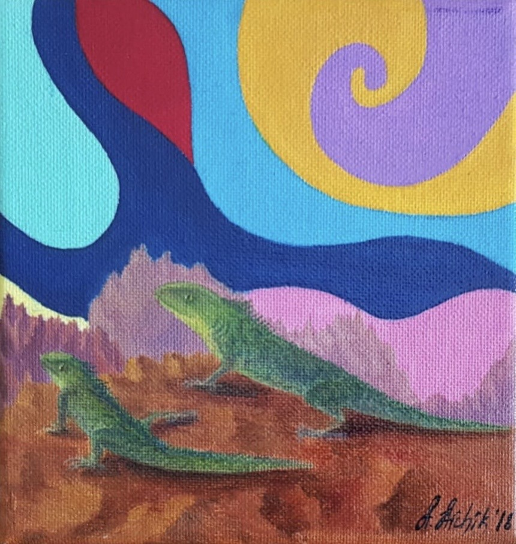
The Teachings of Don Juan (triptych) — III
Oil on canvas · Singapore · 2021
A fable of endurance: acceptance as strength.
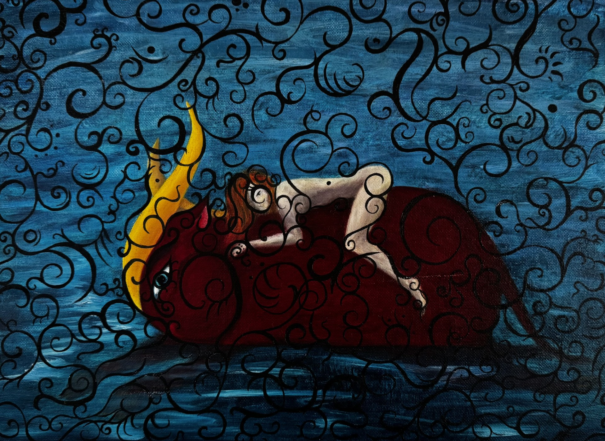
Abduction of Europe
Oil on canvas· Singapore · 2018
"I have been working on this scene for many years, looking for that perfect composition to reflect how I felt about the myth. It is something I can relate to completely, after having moved to another part of the world to be with my significant other.
The scene itself portrays the moment Zeus and Europa are making their way through the sea, and are caught in a heavy sea storm, but both are determined to continue this dangerous journey.".
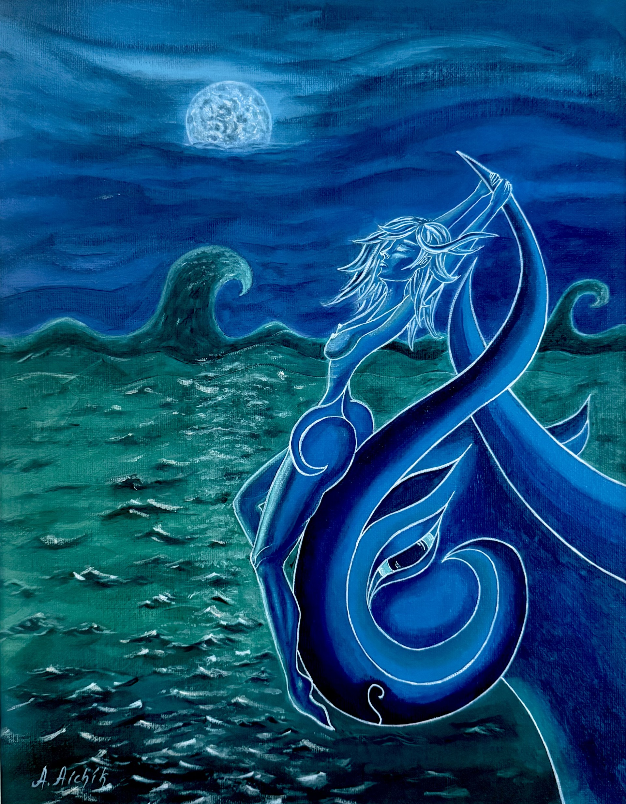
Europe en route
Mixed media on canvas board· Singapore · 2026
After being abducted by Zeus, Europa becomes stronger as she is facing the challenges and the dangers of the vast open sea.
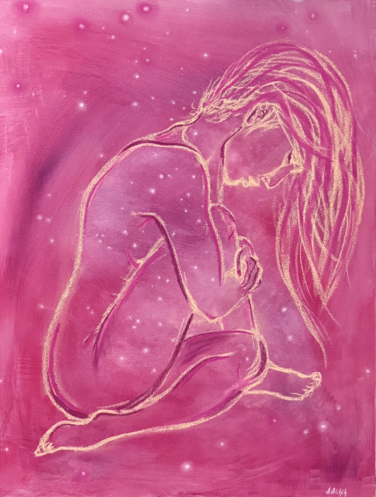
Celeste
Mixed media (acrylic, pastels) on gesso board· Singapore · 2026
"The whole universe inside and around her - she is a truly celestial body. A combination of vulnerability with strength, openness with mystery, celebration with nostalgia - this is Celeste.".
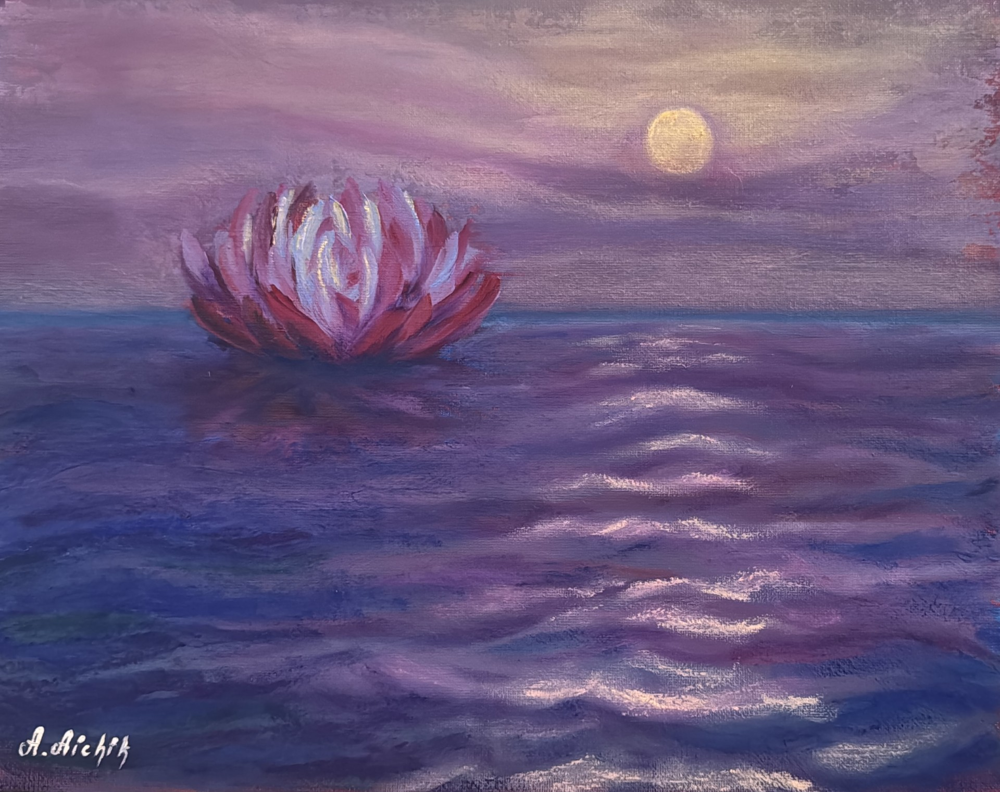
Calm Waters
Mixed media (acrylic, pastel, oil) on canvas board · Singapore · 2026
The moment of still and quiet comes after any storm...
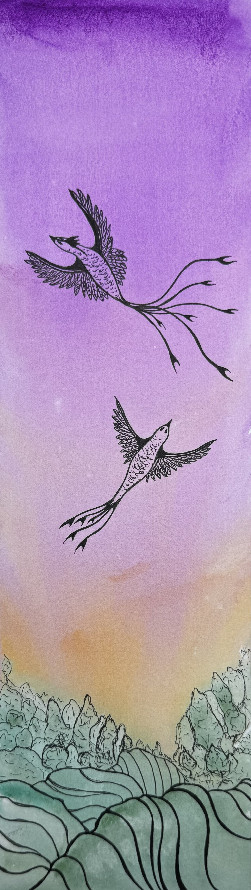
Take Flight
Watercolor & ink on paper · Singapore · 2026
We were born to fly free, to feel the air under our wings, somewhere in a beautiful and open valley, vanishing into the warm summer sunset...
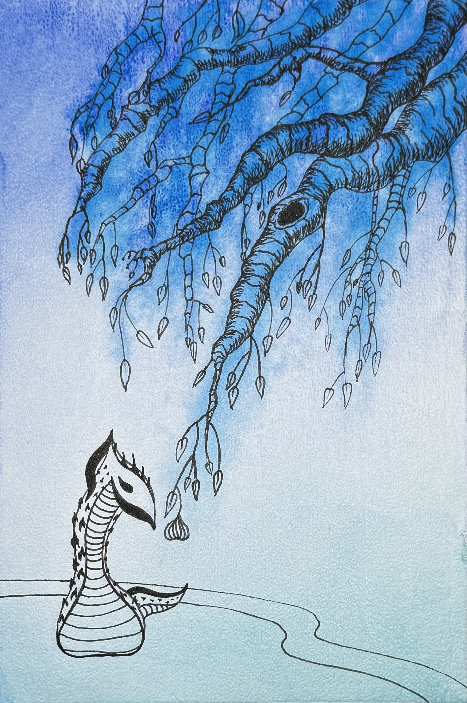
Eve
Watercolor & ink on paper · Singapore · 2026
What if?..
The garden of Eden is reimagined as Eve is contemplating taking the first bite of the apple - or fig, to be precise.
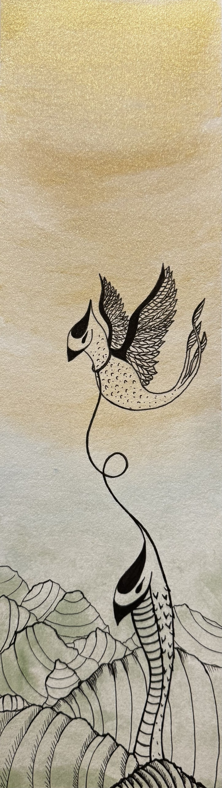
Let Go
Watercolor & ink on paper · Singapore · 2026
Letting go is hard... but it's the only way to let your loved ones fly.
This painting reflects the toughest choice in the life of a parent - when the moment comes to let your child run free, but fear prevents it. It is a powerful reminder of how control can hinder development, and an inspiration to embrace freedom.
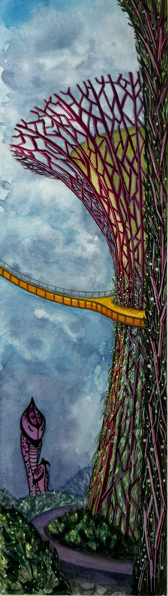
Gardens by the Bay
Watercolor & ink on paper · Singapore · 2026
An ode to the city that provided me with a home, love, and success, an ode to its beauty, its greenery, and the spirit like no other.
Anyone who ever visited it would know the feeling of amazement the moment you lift your head and gaze at the Supertrees - this painting aims to catch this feeling.
This artwork has been exhibited at "Reimagined: Where is Home" held at Mandarin Gallery, Singapore, in May 2026; "Saffron & Ember" held at Visual Arts Centre, Singapore, in June 2026. The work was purchased for a private collection.

Rendez-vous
Watercolor & ink on paper · Singapore · 2026
An encounter shaped by tenderness and attraction.
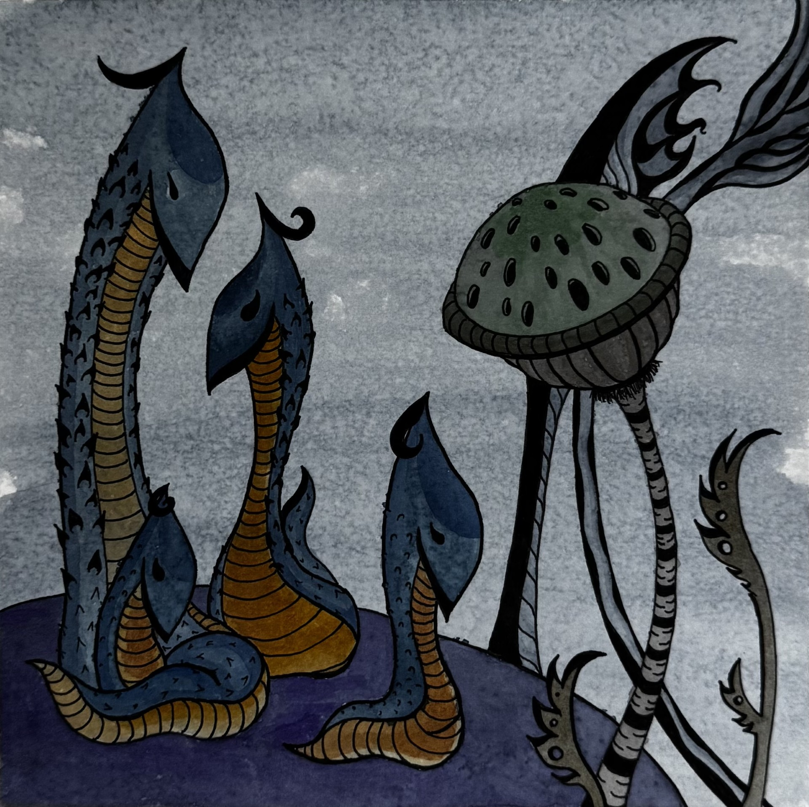
Family trip
Watercolor & ink on paper · Singapore · 2026
A fable about belonging and protection.
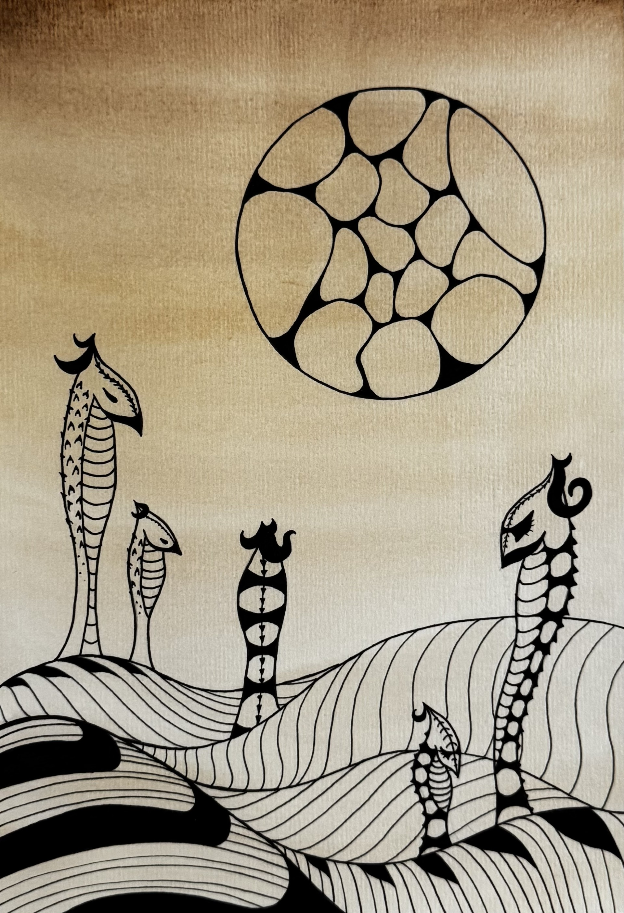
Playdate
Watercolor & ink on paper · Singapore · 2026
A quiet allegory of hope.